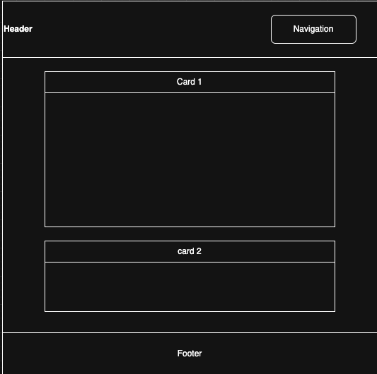
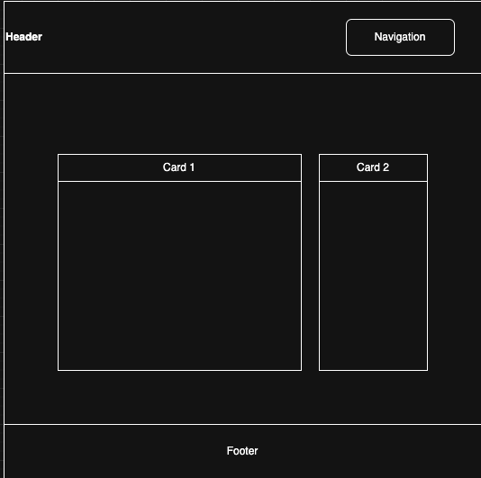

Content
Purpose
The purpose of this site is to provide information and resources to those interested in PRS (Precision Rifle Shooting) or those already particpating in the sport.
Color Schema
The plan for this site is to use darker complimenatry colors. the blues and grays provide adeqaute contrast.
The colors are:
Light Blue Gray (#9FB0BF) - Main background
Dark Space (#1A2430) - Header and card backbround
Vintage Dark Blue (#2A3746) - card h1 background
White - Text
Typography
This site will be keeping things simple my only using 1 font: Playfair Display
Wireframes
I liked the wireframe used in the temples assignemnt. Im going to reuse that for the most part. Im going to align sections vertical on the mobile view and keep the cards aligned horizontally in the desktop
mobile
Desktop
Senarios
Where do I go for information on PRS style shooting?
how do I get into PRS style shooting?
Where do I go to get quality gear that wont break the bank?